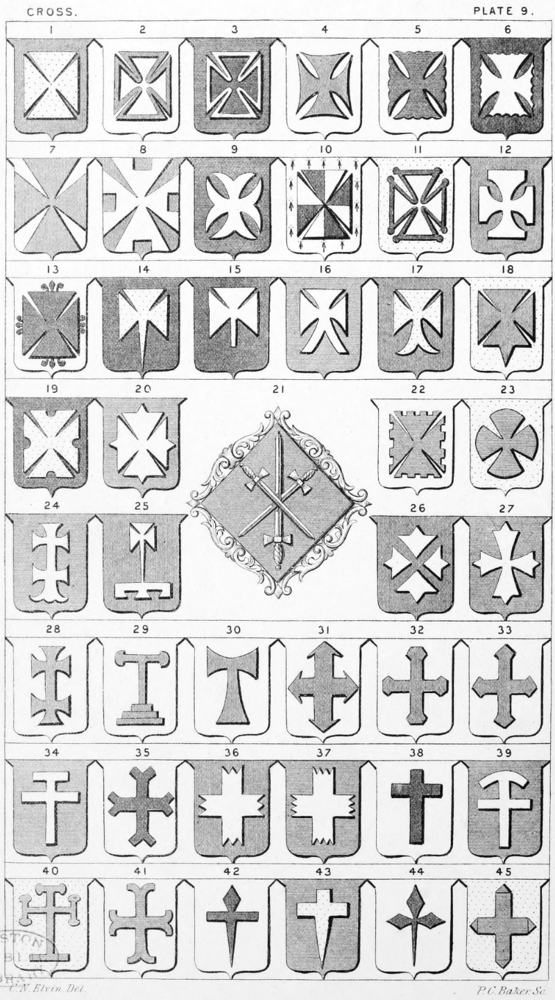

Plate 9.

Plate 9.
- Cross Pattee ; also termed a Cross Formée
- Cross Pattee pierced
- Cross Pattee Fimbriated
- Cross Pattee Concave
- Cross Pattee Invecked
- Cross Pattee Engrailed
- Cross Pattee Thronghout, or Entire
- Cross Pattee Fixed and Notched ; also termed a Cross Pattee Escartelle or Demi Sarcelled
- Cross Pattee Moline
- Cross Pattee Quartered
- Cross Pattee Pommettee, charged with another formee
- Cross Pattee Double Rebated
- Cross Pattee Flory, or a Cross Pattee Fleury, or Florettee
- Cross Pattee Fitchee, or Pitched
- Cross Pattee Couped Pitched, or rebated, better say a Cross Pattee fitched rebated
- Cross Pattee Double sarcelled at bottom
- Cross Pattee Double Fitched
- Cross Pattee Fitchee at the foot
- Cross Pattee an engrail at each point
- Cross Pattee Fitchee at all points
- Arms of a Maid are always borne in a lozenge, Az. three swords one in pale point upwards, surmounted of the other two in saltire points downwards, ar. hilts and pommels or, Norton
- Cross Pattee Crenellee
- Cross Pattee Convexed, or a Cross pattee alisee, or globical
- Cross Patriarchal pattee flory at the foot
- Cross Pattee Fitchee Lambeaux, or a Cross Pattee Fitchee on a label of three points
- Cross Pattee fitchee disjointed
- Cross Pattee fitchee at all points (ancient)
- Cross Patriarchal pattee
- Cross Tau ends convexed, mounted upon three grieces
- Cross Tau also termed St. Anthony's
Cross, and Cross Commise
- Cross Barbed, Barbee, Cramponee, or tournee
- Cross Fusil at each end rebated
- Cross Fusil at each end
- Cross Double Portante
- Cross Fourchee, Fourchy, or Furshe, also termed a Cross Miller rebated
- Cross Couped treble-fitchee, also termed a Cross Fourchee of three points
- Cross Couped fitchee of four at each end ; also termed a Cross of sixteen points, or fitchee of sixteen
- Long, or Passion Cross ; also termed The Latin Cross
- Long Cross couped with the felloe of a wheel conjoined at top
- Long Cross, potent pomelled of three, the foot plain
- Cross moline rebated
- Cross couped fitchee, top fusil
- Cross Fitchee,anciently called Furchee
- Cross Pattee fusily fitchee
- Cross Aiguise, or Equisee